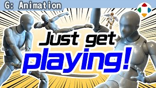
速览
例如拿着可动手办「嗡——」地飞着玩，在日本好像叫「ブンドド」。这对动作设计师可能是不坏的游戏。追求真实动作的人也许不合适，但姿势定格比什么都重要。日本尤其有大量好的可动手办：怎样姿势才能定格、好角度是什么——实际拿起立体物会教你很多，推荐一试。例如这个做得很好的 figma 彼特：普通让他站着是这样，怎么看都差点意思；同样是站，这样如何？利落了吧。依手办类型而异，要点有：避开对称（左右对称）、也避开正面；收下巴；头颈角度不要笔直垂直；上身、腰、腿不串成一列（有时叫 S 曲线）；让围巾的飘动看得见；裙子部分硬改不了，但飘动物要带动势；肩膀能动的范围内稍微抬一点；左右手臂从不同角度展示，轻弯并顾及剪影，腋下别开太大；手腕轻微向前弯，不要放在前臂延长线上笔直；重心不要左右正中，稍微打破；脚轻微呈八字，从镜头看不平行，一前一后；让翅膀有立体感……即使没动作的站立状态也能考虑很多。但最终不是理论或诀窍，而是什么让人觉得好；有动作的姿势当然还有更多思路。搜角色名常常排在高位的《大乱斗》立绘，包括最后修饰都做得很好——这些当然也是摆姿势，姿势基础不行就很难。养这感觉，他认为没有比摆弄立体物更好的方法，大家玩玩看吧。
1. 玩手办是练习 0:02
例如拿着可动手办「嗡——」地飞着玩，在日本好像叫「ブンドド」。这对动作设计师来说，可能是不坏的游戏。
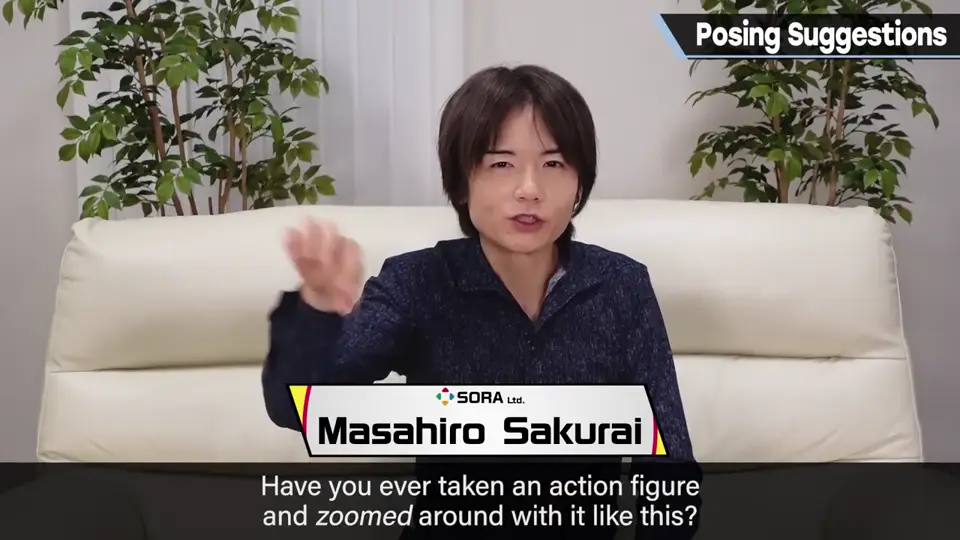
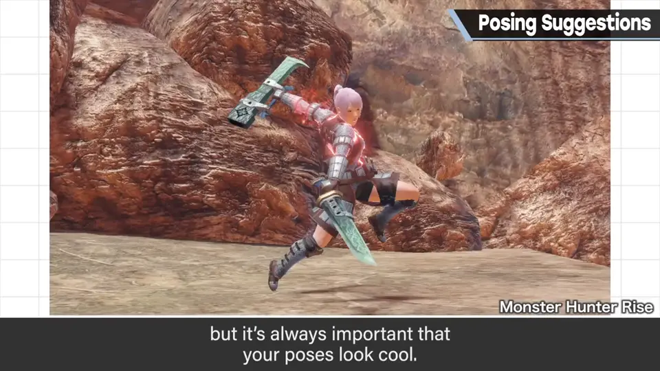
日本尤其有大量好的可动手办。怎样姿势才能定格、好角度是什么——实际拿起立体物会教你很多，推荐一试。
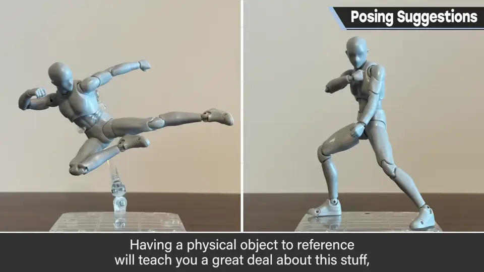
2. figma 彼特 0:48
例如这个做得很好的 figma 彼特：普通让他站着是这样，怎么看都差点意思。同样是站，这样如何？利落了吧。
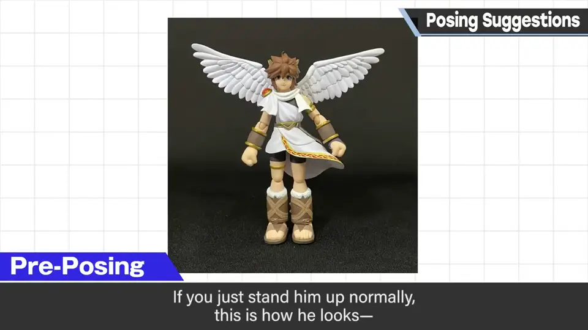
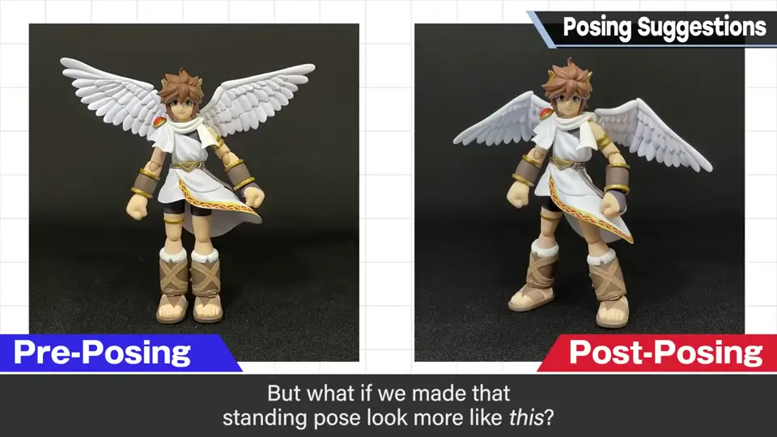
3. 站姿要点 1:09
- 避开对称（左右对称），也避开正面。
- 收下巴；头颈角度不要笔直垂直。
- 上身、腰、腿不要串成一列（有时叫 S 曲线）。
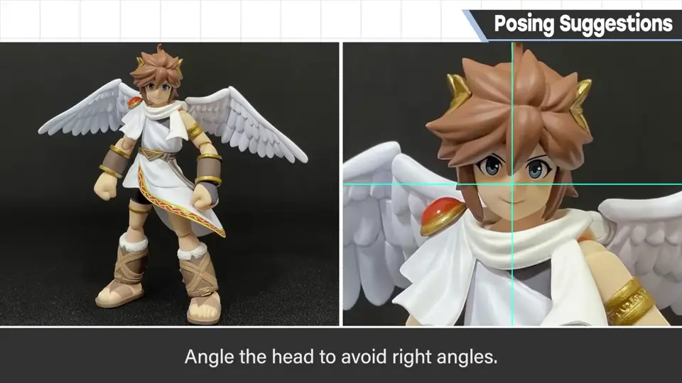
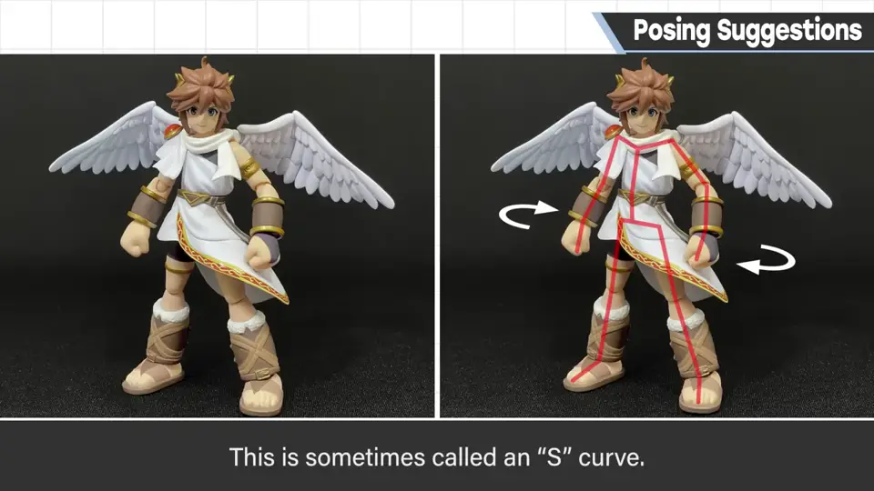
- 让围巾的飘动看得见；裙子硬改不了，但飘动物要带动势。
- 肩膀在能动范围内稍微抬一点。
- 左右手臂从不同角度展示，轻弯并顾及剪影；腋下别开太大。
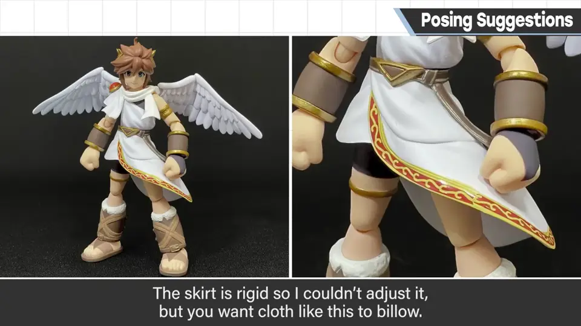
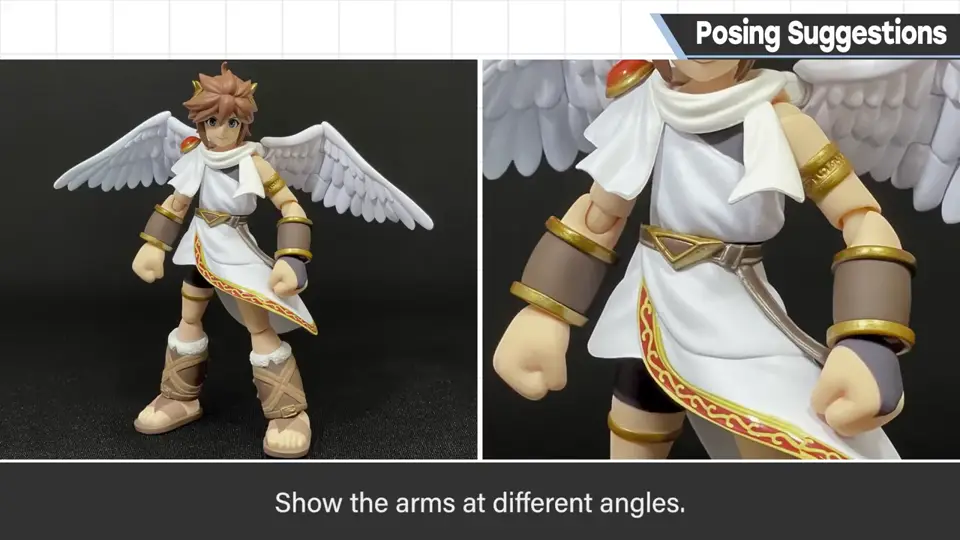
- 手腕轻微向前弯，不要放在前臂延长线上笔直。
- 重心不要左右正中，稍微打破。
- 脚轻微呈八字，从镜头看不平行，一前一后；让翅膀有立体感。
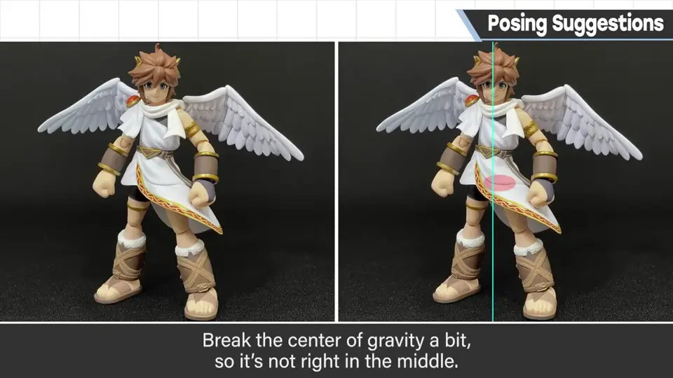
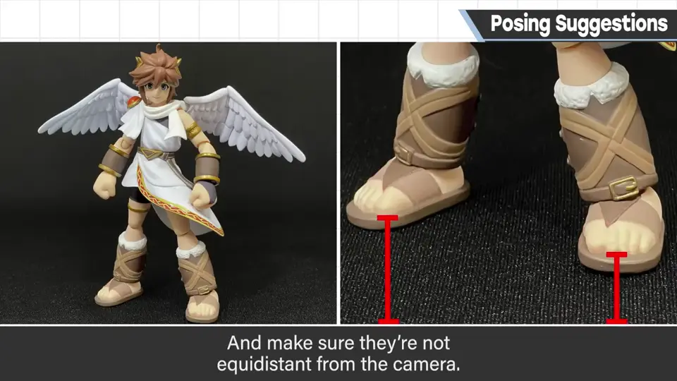
4. 最终不是理论 2:14
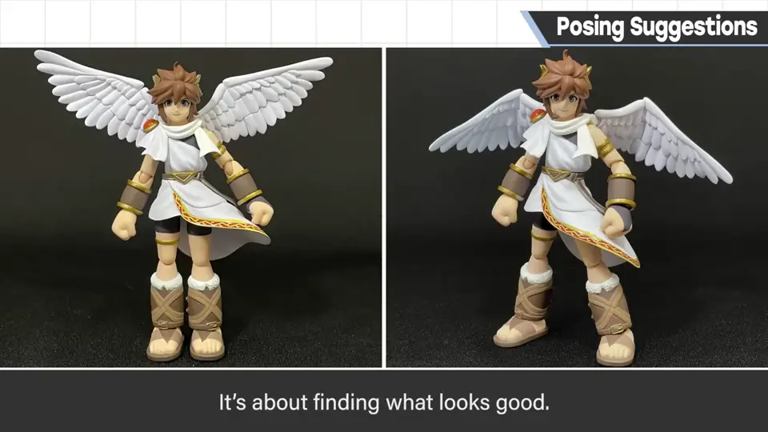
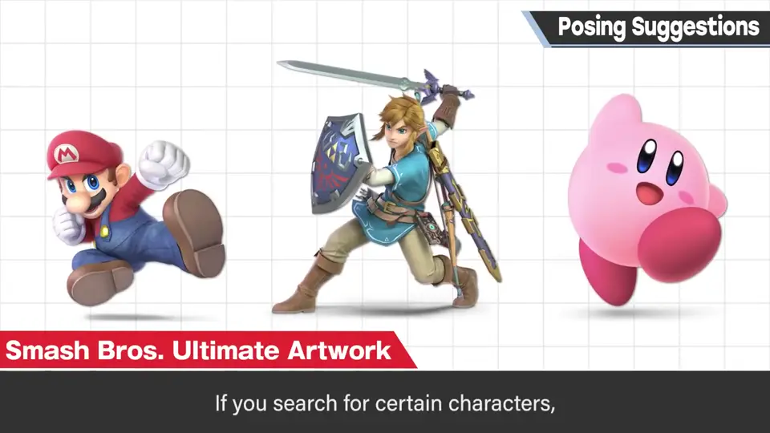
有动作的姿势当然还有更多思路。搜索角色名时常排在高位的《大乱斗》立绘，包括最后修饰都做得很好——这当然也是摆姿势，姿势基础不行就很难。
养这感觉，他认为没有比摆弄立体物更好的方法。大家玩玩看吧。
自测题
1. 为什么樱井推荐玩可动手办？
姿势定格最重要，摆弄立体物能学会怎样定格、什么是好角度。 0:35
2. 列举三条站姿要点。
避开对称与正面；上身腰腿不成直线（S 曲线）；重心稍偏、双臂不同角度、手腕不直等。 1:15
3. 姿势好坏最终靠什么判断？
不是理论或诀窍，而是什么让人觉得好。 2:20